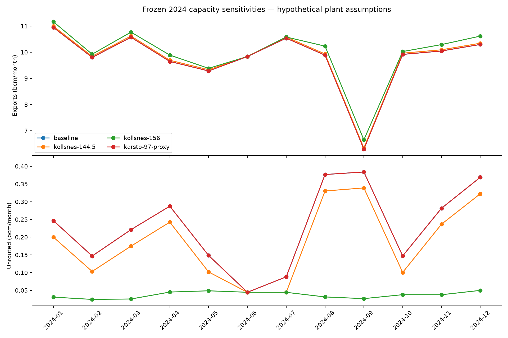
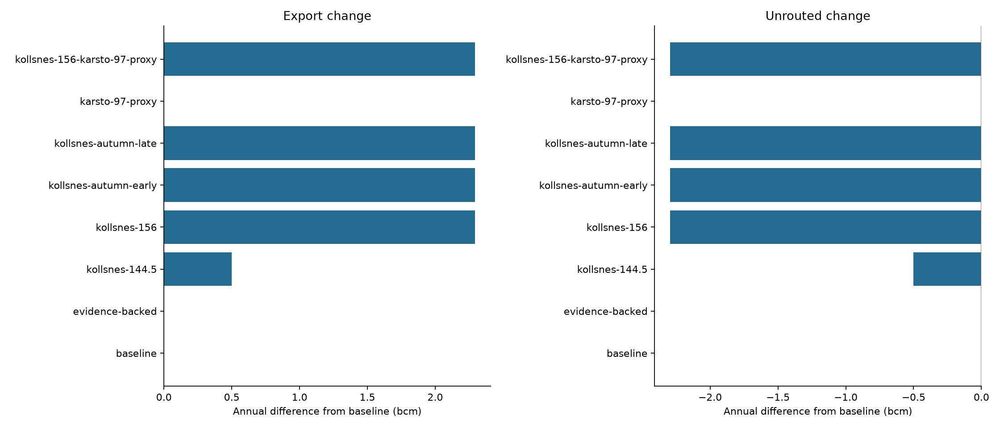
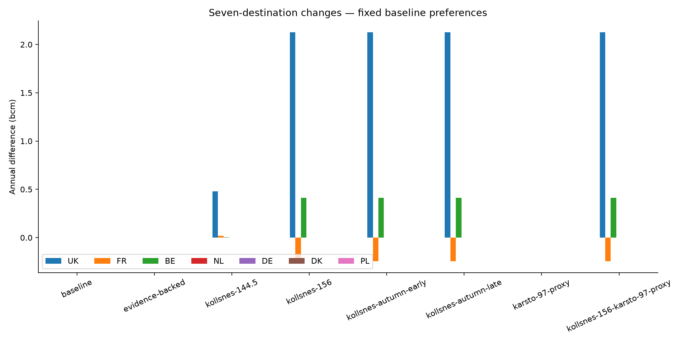
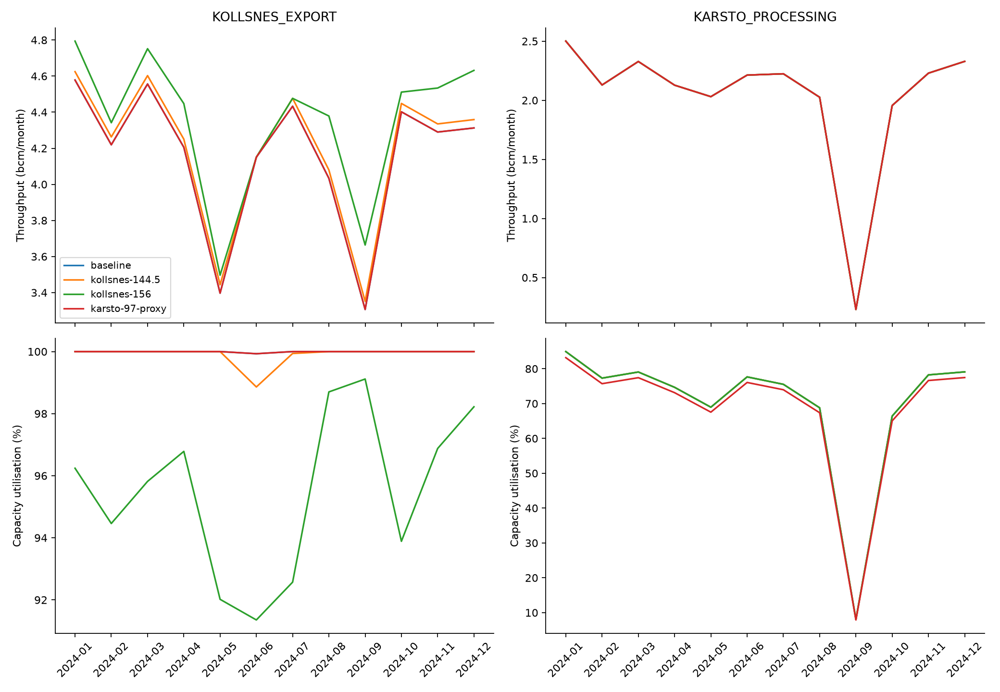

One-off authorised frozen 2024 model-to-model comparison, not forecasting or validation. Evidence-backed mode retains baseline: no public candidate is eligible. Kollsnes 144.5/156 and Kårstø 97 are hypothetical dry-boundary assumptions. Signed Kollsnes maintenance is preserved once. Autumn endpoints both give 156 throughout 2024; they cannot identify the commissioning date. ENTSOG energy conversions remain inactive. Default settings and 2026 holdout remain unchanged.
Maximum baseline replay difference: 4.995809460561773e-10 bcm.
| total_exports_bcm | total_unrouted_bcm | mapped_disposal_bcm | UNMAPPED_bcm | |
|---|---|---|---|---|
| scenario | ||||
| baseline | 117.083134 | 2.741249 | 2.294389 | 0.446859 |
| evidence-backed | 117.083134 | 2.741249 | 2.294389 | 0.446859 |
| kollsnes-144.5 | 117.584362 | 2.240020 | 1.793162 | 0.446859 |
| kollsnes-156 | 119.377524 | 0.446859 | 0.000000 | 0.446859 |
| kollsnes-autumn-early | 119.377524 | 0.446859 | 0.000000 | 0.446859 |
| kollsnes-autumn-late | 119.377524 | 0.446859 | 0.000000 | 0.446859 |
| karsto-97-proxy | 117.083134 | 2.741249 | 2.294389 | 0.446859 |
| kollsnes-156-karsto-97-proxy | 119.377524 | 0.446859 | 0.000000 | 0.446859 |
| asset | EUROPIPE_I | EUROPIPE_II | FRANPIPE | KOLLSNES_EXPORT | LANGELED_SOUTH | NORPIPE | ZEEPIPE_EXPORT | ZEEPIPE_IIB |
|---|---|---|---|---|---|---|---|---|
| scenario | ||||||||
| baseline | 12 | 5 | 9 | 11 | 1 | 12 | 11 | 12 |
| evidence-backed | 12 | 5 | 9 | 11 | 1 | 12 | 11 | 12 |
| kollsnes-144.5 | 12 | 5 | 9 | 10 | 1 | 12 | 11 | 12 |
| kollsnes-156 | 12 | 5 | 8 | 0 | 2 | 12 | 12 | 12 |
| kollsnes-autumn-early | 12 | 5 | 8 | 0 | 2 | 12 | 12 | 12 |
| kollsnes-autumn-late | 12 | 5 | 8 | 0 | 2 | 12 | 12 | 12 |
| karsto-97-proxy | 12 | 5 | 9 | 11 | 1 | 12 | 11 | 12 |
| kollsnes-156-karsto-97-proxy | 12 | 5 | 8 | 0 | 2 | 12 | 12 | 12 |



